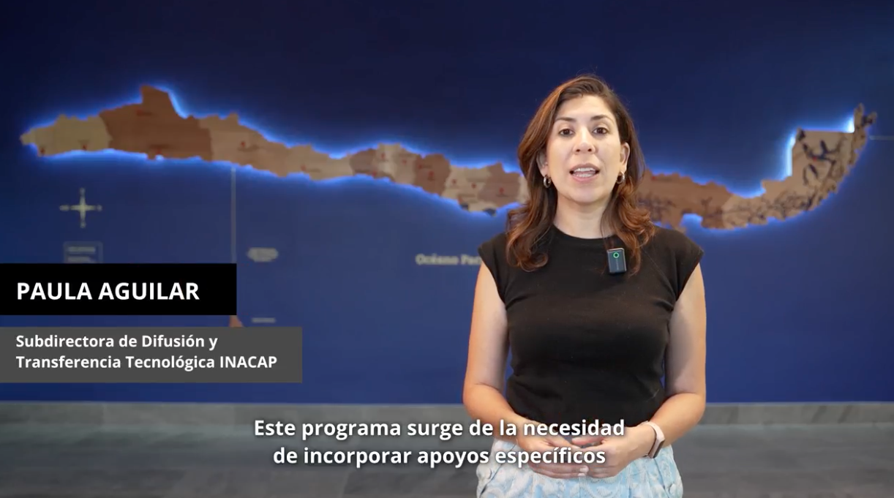
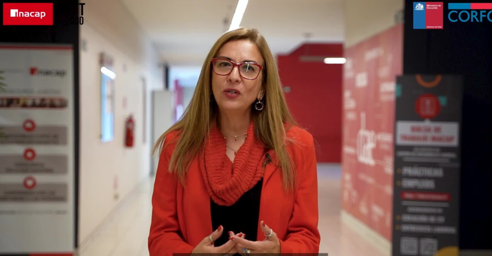
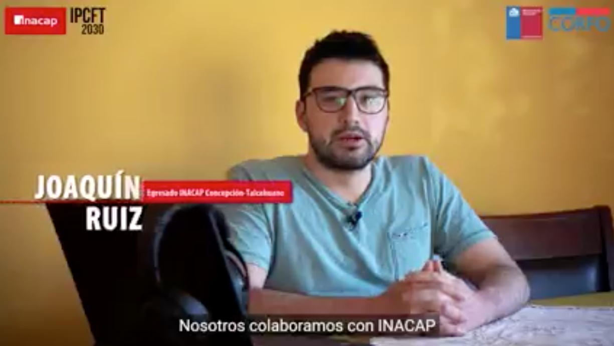

Programa de Aceleración de Innovación INACAP
Transforma tus ideas para llegar a entornos reales
Transforma tus ideas para llegar a entornos reales
INACAP impulsa la transferencia de soluciones innovadoras al entorno socio-productivo a través del Programa de Aceleración de Innovación. Esta iniciativa estratégica apoya la maduración de soluciones tecnológicas generadas por docentes y estudiantes, orientándolas hacia su transferencia al entorno real.
El programa surge de los aprendizajes de IP/CFT-2030 y Fábrica 4.0. A través de acompañamiento técnico y articulación con actores externos, se fortalece la gestión de proyectos de innovación tecnológica con impacto real.

Una línea operativa que entrega financiamiento a proyectos tecnológicos con impacto. Modalidades: Nuevos (TRL ≥ 3) y Continuidad (TRL ≥ 5). Duración: hasta 5 meses. Requiere equipos con docentes, estudiantes y entidad externa.
Se formaliza mediante acuerdos o contratos de innovación. Aplica a soluciones con validación real, propiedad intelectual institucional y potencial de aplicación productiva o social.
Proyectos destacados:
Escríbenos y co-creemos el futuro de la innovación tecnológica. Cada sede INACAP tiene un equipo listo para apoyarte.